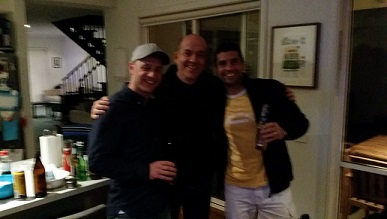
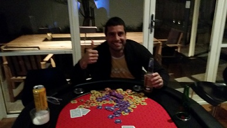

.....Full table, BBQ feast and the attack of the South Americans....
|
| Position | Name | Points |
|---|---|---|
| {{result.position}}{{positionSuffix(result.position)}} | {{result.name}} | {{result.points}} |
| Position | Name | Played | Won | Win Ratio | Ave Points | Ave Position | Points |
|---|---|---|---|---|---|---|---|
| {{$index + 1}}{{positionSuffix($index + 1)}} | {{result.name}} | {{result.played}} | {{result.won}} | {{result.won / result.played * 100| number:2}} % | {{result.points / result.played | number:2}} | {{result.averagePosition | number:2}} | {{result.points}} |
OK. This is going to be an interesting article - I started off writing this while I was still clearly pissed - by the time I finished I had sobered up. I'll leave it to you to guess which bits I wrote in what state...
Anyway for those not wishing to read on - Spoiler Alert - Junior ended up taking out his first Poker Night against Carlos and Jade - a fantastic effort... and good to see new faces standing on the podium. Overall, another great night was had by all - and it was good to welcome Michael - one our "originals" - back into the fold after eighteen months in Perth.
So blow by blow this is my recollection....
The first hour... Two Pair Jade
The game opened with something happening in the first two hands - amazing how often this occurs. Paul's A7 held against Jade's K4 - both having two pair. Second hand - Junior opened his account with a flush - against Jade - who again had two pair. Very unlucky - and my notes indicate that Jade made mention about something not being quite right.
The first half hour or so had its ups and downs - and as it normally does poker became the side show to the usual intellectual banter. Michael - with no recent exposure to this - started talking openly about how his dog was currently stranded in Perth. It was then put to him to tone down any insinuations so as not to offend any of the others at the table.
David and Paul then got involved in an interesting hand during these early stages - three 10's flopped with everyone folding around them. Paul rolled out $100 bets after the flop and then on the turn. After careful consideration Dave folded - clearly Paul had nothing. Well done on a great bluff!
So the first hour came to a close - and wouldn't you know it - Jade took down the last hand - with two pair. Paul - by this stage had the early chip lead.
The second hour... You gotta try a Wallaby Pie
Carlos and Steve kicked off the second hour by going into battle against one another - Carlos made a bold bet on the flop with a pair of nines to Steve's pair of aces - but had this pay off when another 9 emerged on the turn.
Two massive hands then occurred...
First - Jade and Junior faced off - chips were flying around like there was no tomorrow - Junior ended up with a hand that was one only suit off being a Royal Flush - and taking down Jade's pair of aces.
Second - Paul managed to river Steve and Junior (notice how I'm being clever in using a poker term to sound like a verb) with an Ace for a straight. It was ballsy move and he took down a massive pot as a result.
A few hands later, the table got excited when everyone thought that Michael was going all in - he was just in - in fact I think he said "I'm in". He actually lost the hand with AK against Paul's full house.
A ten minute mini break then took place with Wallaby Pies being served - with Andy and Michael sniggering in the corner like little school children. Guys - you should know by now its the wrong state to be making jokes about how shit our national rugby team is. Anyway, for the record the pies were nice (thanks Andy)...
After the mini break - Andy finally took down his first hand of the night holding an Ace Pair against five runners..
And then Michael won his first hand in the history of Poker Night ... 18 months in the making. Clearly chuffed about his hand he showed me QA before the flop (I was out). By the river, he had two pair - then proceeding to get a little too excited he laid down a $5000 bet (about four times the pot). No one bought it - meaning the chips were all his. Well done hopefully the first of many!
And that was the second hour - with Junior emerging as chip leader - leading an extended break to watch the last quarter of the footy... giving time for Jade to dash off out of the house for two and a half minutes.
The end... bad cards and bad bluffing
Jade kicked off proceedings with a straight - going in with a 7 and 4 - his quote at the time - "I was happy with that".
Michael and Carlos had the first all in battle soon after - Carlos' A5 beat Michael's A3.
|  |
| The podium finishers. Medals all around for Jade, Carlos and Junior. |
At this stage, Michael was more keen on checking out the EPL then playing on... but he managed to take down one last pot...
The precursor to this was a conversation I had with him earlier in the night. Knowing that he hadn't played for eighteen months I decided to give him a few tips to help him get back up to speed. One of those tips was more or less along the lines of "2 and 7 is the worst hand in poker and you should avoid playing it - and trust me I'm a good poker player". So what did he do? He went all in with 2 and 7 then won. So there is a moral to that story somewhere...
Which leads me neatly to the point where I took out the award for the shit bluff of the night. With absolutely nothing I put two thirds of my stack on the line. Jade decided to go all in - with a better version of absolutely nothing. Brian should of actually won the hand but he decided to get out of the way of the big betting... so there you go.
The balliest hand of the night - and in fact in the history of Poker Night - took place soon after. Brian went all in with QA - then Steve matched him also going all in with K3 Diamonds. After the flop - Brian had an Ace pair, with one diamond on the board. So he had about a 90% chance of winning the pot at this stage ... and you guessed it the last two cards were diamonds. So Steve won the hand with a flush and sensationally took Brian out of the race.
We then had to make up a rule. Not sure if anyone know this - but when two people go all in and both get busted on the same hand, the person with the highest chip count before the hand gets the higher placing. Well, Paul and myself both had exactly the same amount of chips when we both got taken out on the same hand. The rule now (for anyone that cares) is that if two people have the same chip count - the player with the better hand at the time gets the higher placing.
So - this begs the question - what if you have the same chip count and the same cards? Do we settle this with an arm wrestle? A pissing match perhaps? Maybe something we need to consider putting into our by-laws at some stage along with the banning of mankinis.
|  |
| Winners are Grinners....Junior enjoying the moment with all the chips (less $500) |
Anyway - it was pretty much midnight by now - Dave - patient all night had to go all in with his pocket 6s - Carlos and Jade both called - and unfortunately for Dave - Jade took the the pot down with trip Jacks.
Steve was next to go - with his AK being taken down against Junior's AQ.
Then it was down to three - Carlos, Jade and Junior.
The last hand saw a three way all in battle - Junior taking Carlos out - and leaving Jade with about $500 in chips. Jade was keen to play on - at which stage Brian - who was dealing - cracked the shits and called time. For the record no deals were done.
So Junior emerged as the winner for the first time - a great effort and very well deserved.